COghe · Mạch trên kính, chui ống nhanh hơn
14/10/2026 · Glass C · Mạch in bám mặt đỡ thật; giữ nguyên vật lý cơ quan. Tăng vận tốc chui ống ×1,5. Đã kiểm tra hình học 65 màn và chạy qua 16 bài PlayMode. Ảnh dưới đây chụp trực tiếp từ Unity.
Chi tiết kiểm chứng · Kết quả kiểm tra
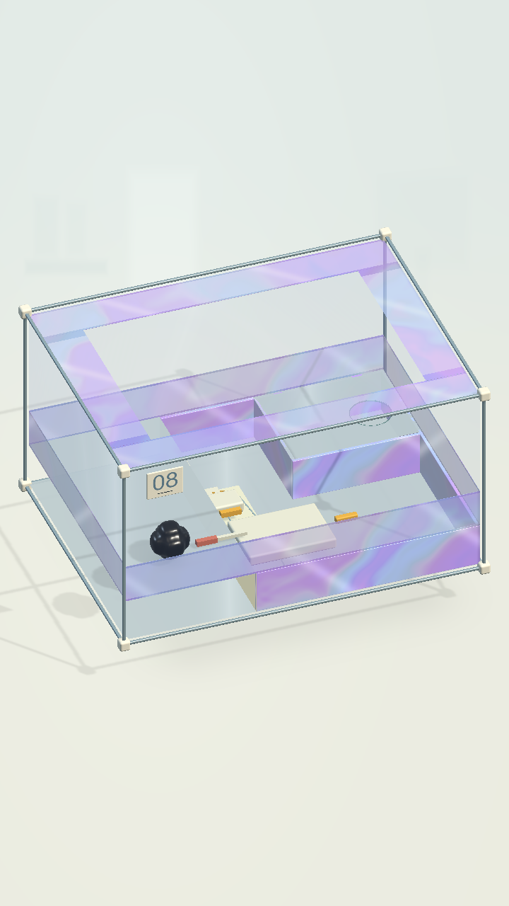
Level 08 · Unity runtime
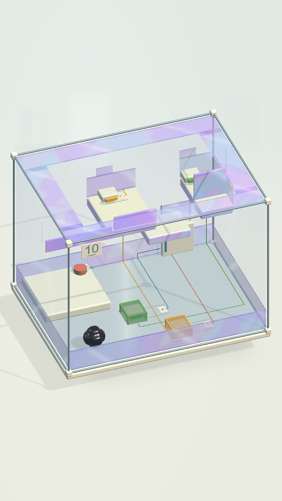
Level 10 · Unity runtime
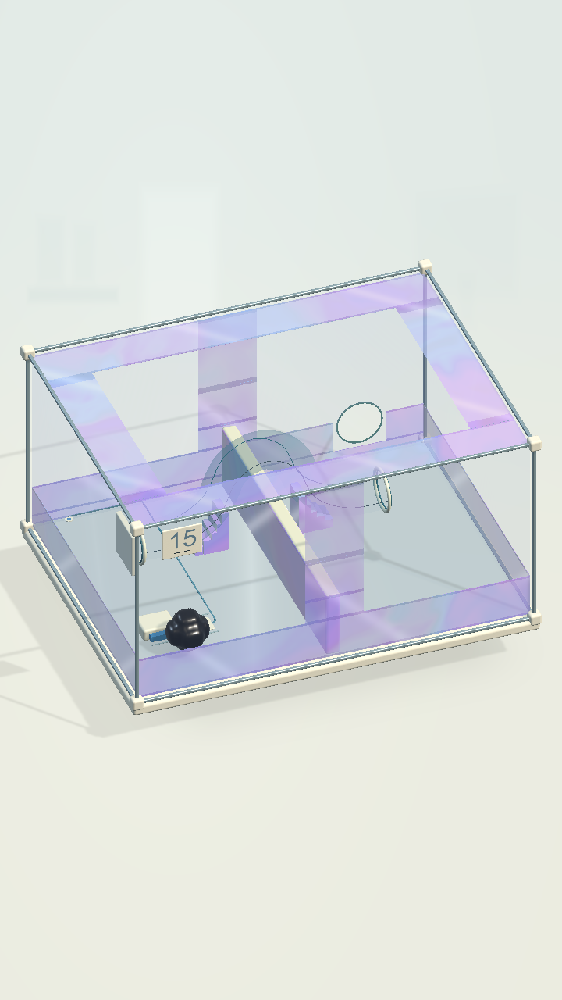
Level 15 · Unity runtime
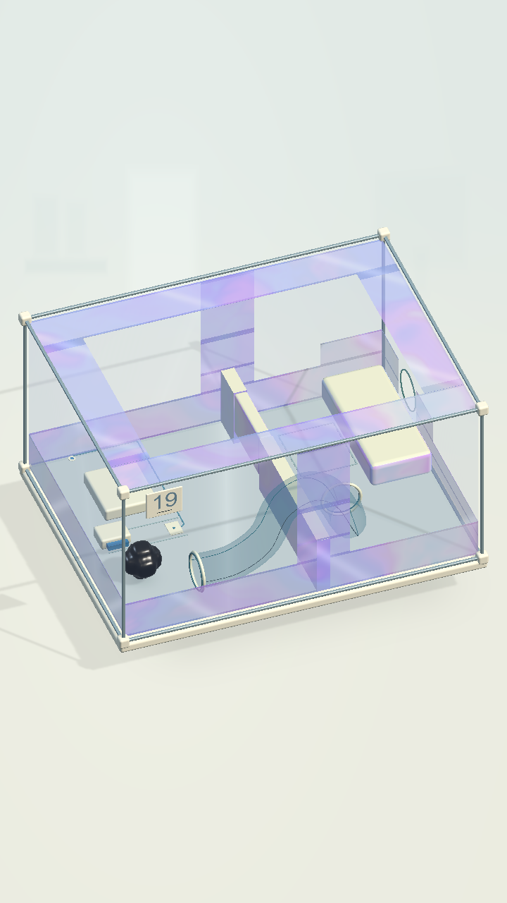
Level 19 · Unity runtime
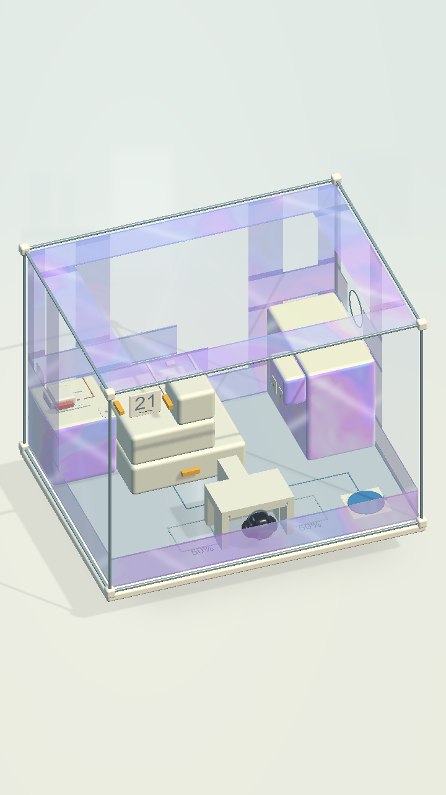
Level 21 · Unity runtime
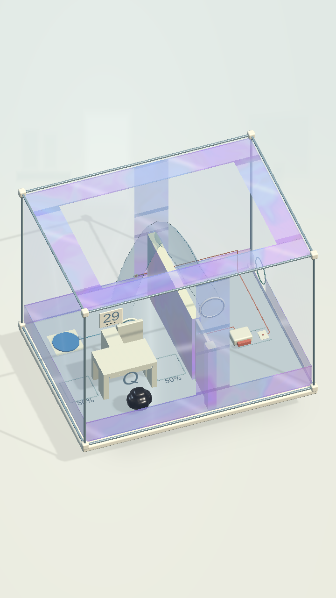
Level 29 · Unity runtime
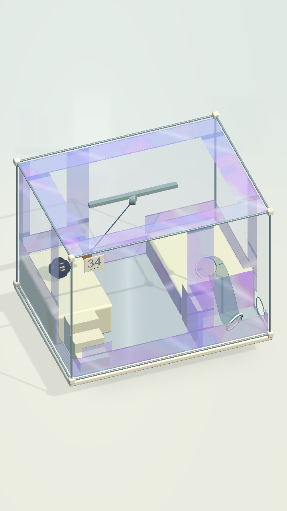
Level 34 · Unity runtime
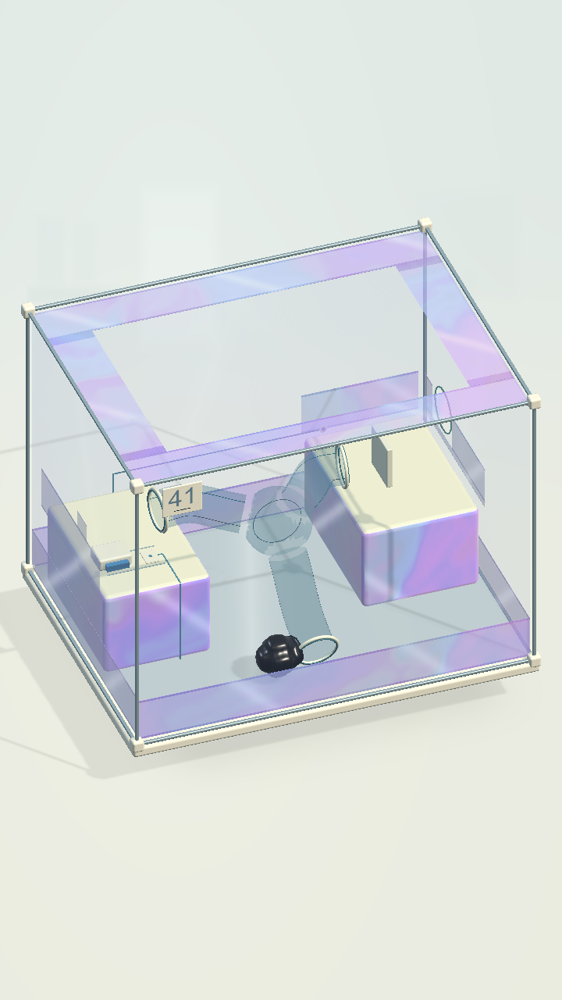
Level 41 · Unity runtime
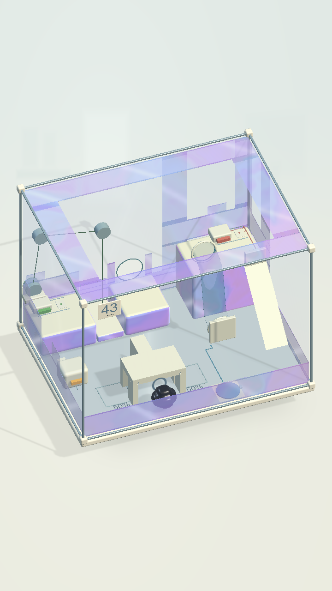
Level 43 · Unity runtime
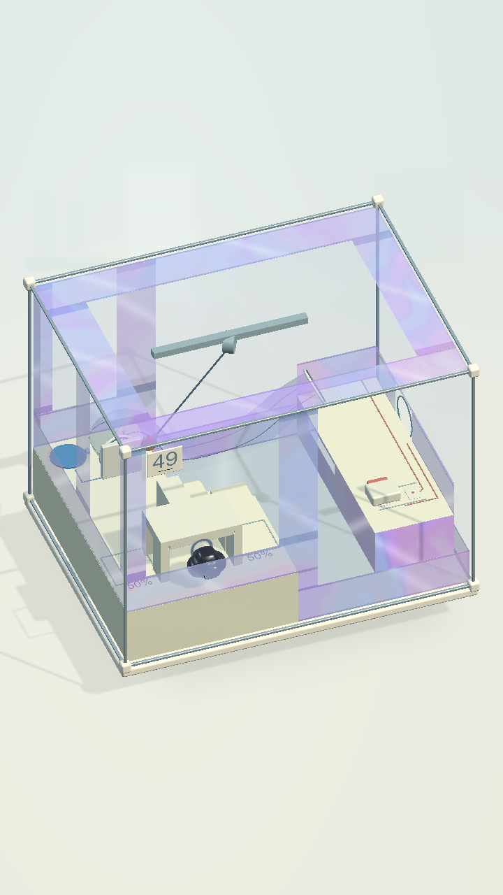
Level 49 · Unity runtime
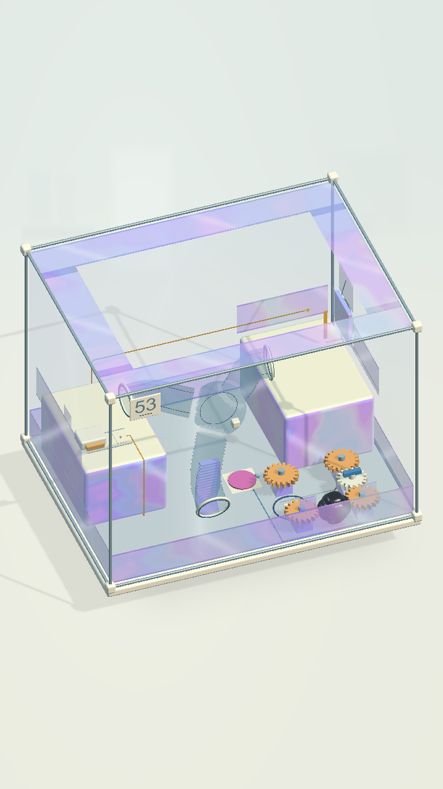
Level 53 · Unity runtime
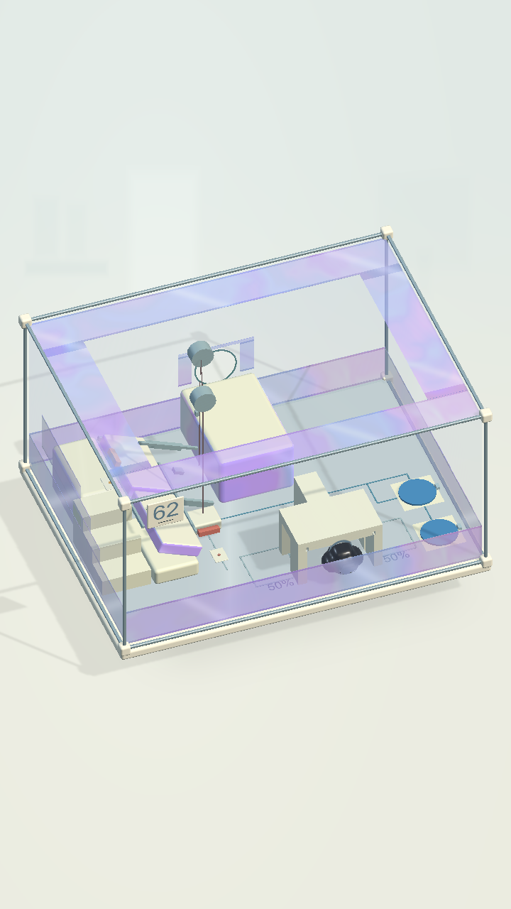
Level 62 · Unity runtime